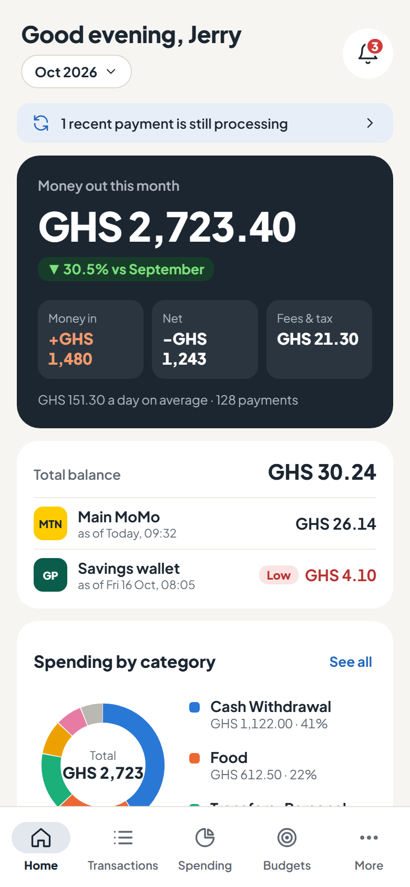
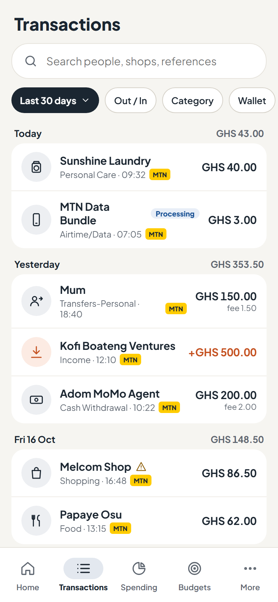
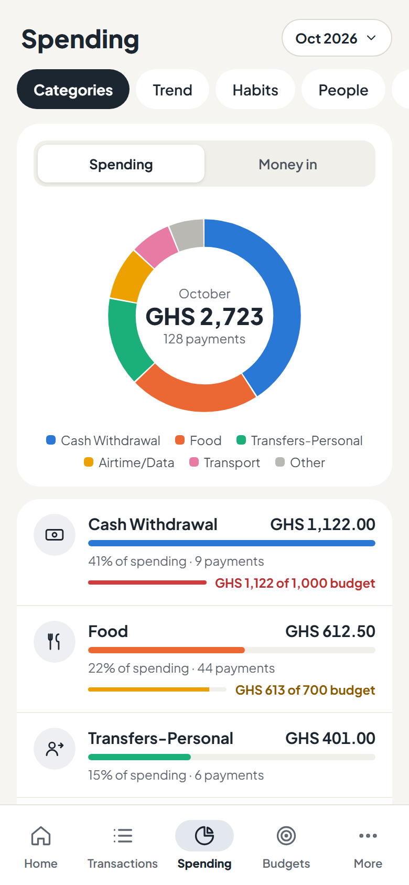
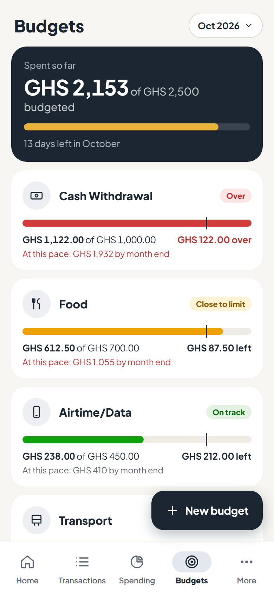

Your MoMo, made clear.
SikaTrack reads the MoMo SMS already on your phone and turns them into a clear view of your money: where it goes, what fees cost you, payments that keep charging, and budgets that warn you before you overspend. You never type a transaction in by hand.
Works with MTN MoMo and GhanaPay. Android 7 or newer. Free.




Screens from the app's design, with sample data.
How to install
SikaTrack isn't on the Play Store yet, so Android asks you to confirm a few things the first time.
- Download the APK with the button above.
- Open it from your notifications or your Downloads folder.
- If Android says it can't install apps from this source, tap Settings, turn on Allow from this source for your browser, and go back.
- If Google Play Protect warns about an unknown app, tap More details, then Install anyway. It warns about every app from outside the Play Store.
- Tap Install, then Open, and sign in with your Google account.
Letting SikaTrack read your MoMo SMS
On Android 13 and newer, apps installed from a download can't get the SMS permission until you allow it once. If SikaTrack's SMS step says the setting is restricted:
- Open Settings → Apps → SikaTrack.
- Tap the ⋮ menu at the top right, then Allow restricted settings, and confirm with your PIN or fingerprint.
- Go back to SikaTrack and tap Allow access again.
Updating
Download the new APK from this page and install it over the old one. Your account and data stay as they are.